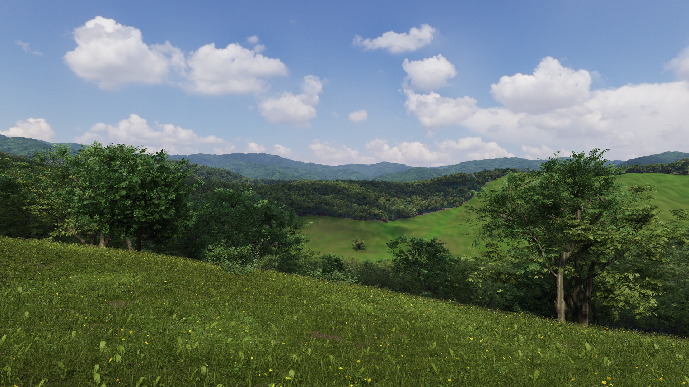

CYBR
/
FOREST
Save PNG
×
Drag right side to look
CYBR
/
FOREST
Save frame

Preparing the landscape…
Unable to start the renderer
Rendered preview
Watch the camera recording
Download source (1 of 2)
Download source (2 of 2)
Try again